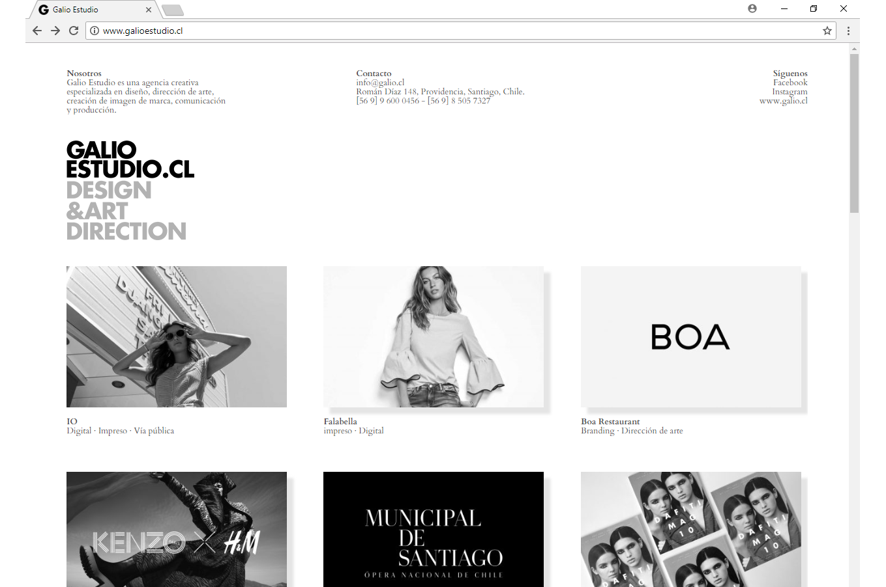
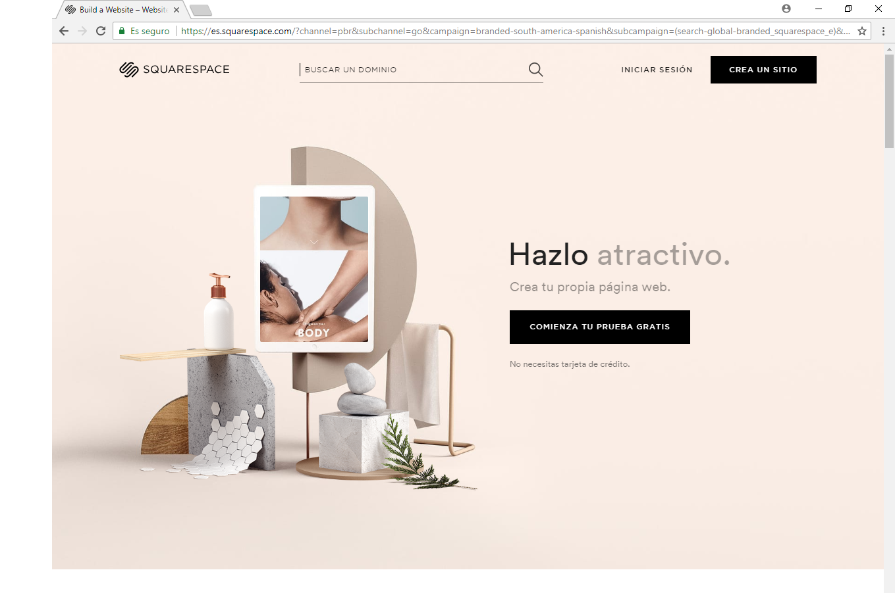

Obj. General:
Presentar y describir una recopilación de los diversos proyectos desarrollados por un (a) Estudiante de Diseño para dar a conocer su trabajo, capacidades y habilidades, para así en el futuro, poder ser contactado y considerado para diversas opciones laborales.
Galio Estudio. La web de un estudio creativo.
La estética de las páginas de Squarespace.
Gabriel Kirschenberg
Diseñador y Director Estudio Q.
Gabriel tiene 45 años, es Diseñador y el Director de una prestigiosa agencia creativa especializada en diseño, dirección de arte, creación de imagen de marca, comunicación y producción. El diseñador jefe de su estudio ha recientemente renunciado, por lo que se encuentra en busca de un profesional que pueda contratar para poder tomar este importante cargo. Para esto, pone un aviso en Starter Daily, donde requiere que los postulantes adjunten su Currículum Vitae y su portafolio web para poder examinarlo.
Andrés es una persona exigente que busca que la calidad del profesional se refleje en todos los aspectos y piezas que desarrolla. Por eso, espera que la página web que visite esté bien diseñada.
Andrés Carmona
Director de Arte.
Andrés tiene 27 años, es director de Arte de un Estudio Fotográfico. Para el desarrollo y diseño de presentaciones con las propuestas para los clientes, necesita buscar a un (a) diseñador (a) que pueda incorporarse al equipo. Necesita un diseñador recién titulado, y no le importa realmente la experiencia laboral, sólo que pueda cumplir con los requerimientos que tiene el cargo.
A Andrés y al Estudio sólo les importa que el Diseñador haya salido de una buena casa de estudios y que tenga gusto por la fotografía de moda y publicitaria.
Marisol Pérez
Mamá soltera y Micro emprendedora.
Marisol tiene 35 años, es enfermera de profesión y madre soltera. Vive en una comuna del sector sur de la capital y hace 1 año dejó su trabajo en el hospital para dedicarse a tiempo completo a su emprendimiento, una pequeña pyme donde se dedica a la producción de Cosmética Artesanal Vegana. Como ella es madre soltera, necesita obtener más ingresos para poder mantener su casa y a su hija y cree que con su emprendimiento puede lograrlo. Para esto, necesita contactar a un (a) Diseñador (a) para generar una nueva imagen de marca para que su pyme pueda crecer, expandirse y llegar a más potenciales clientes.
Marisol decide buscar y contactar a alguien por la web, y quiere que sea un (a) Diseñador (a) joven, que pueda entender su visión y metodología de trabajo, y que pueda contactar y pedirle que desarrolle piezas gráficas cuando lo requiera y sea necesario.
Como no entiende mucho de web y de diseño, la página tiene que ser fácil de visualizar y fácil de interactuar con.